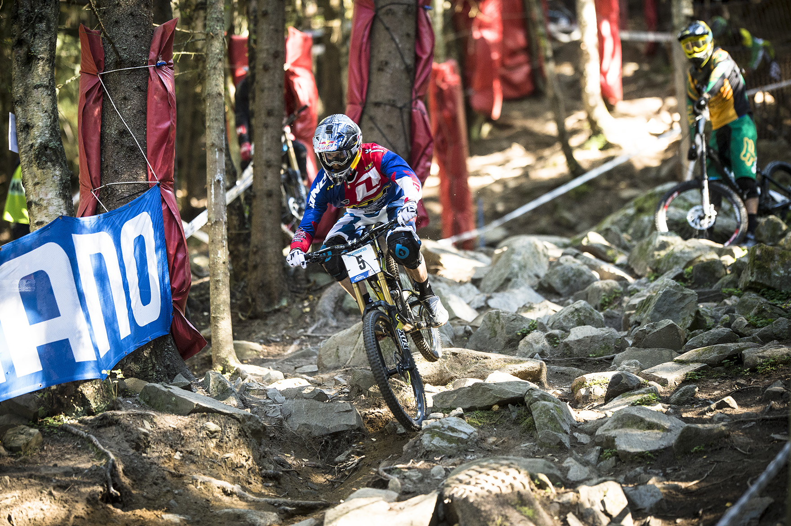

-Les fourches à air, c'est-à-dire que celle là nous sommes obligé de bien régler la suspension en fonction de notre poids et donc à l'aide d'une pompe spéciale gonfler à la pression correspondante !!!!
En effet, il faut quand même régler la compression en haute et basse vitesse ainsi que le rebond en haute et basse vitesse comme chacun le sens.
Fox est très populaire et est très reconnu dans le monde !!!!
C'était jusqu'à y'a pas si longtemps que ça, la marque par excellence, le top niveau.
Mais de nouvelle marque comme Ohlins arrive sur le marché et ce font une très bonne réputation puisque par exemple, le champion du monde de descente, Loic Bruni, été équipées en suspension avant et arrière Fox alors qu'à présent il est sur du Ohlins !!!
-L'autre type est les fourches à ressort, c'est un système où, ce coup ci, pas besoin de pompe ou d'autre outils, il suffit juste de tourner les bouttons de réglages; c'est à dire la compression en haute et basse vitesse ainsi que le rebond en haute et basse vitesse !!!
Il existe plusieurs débattement qui est différent selon la fourche mais surtout selon la pratique.
Reprenont la photo de départ mais imaginons ce coup ci que les suspensions c'est du Fox...
Alors là, nous sommes sur du DH (du vélo de descente), alors, qu'ont-ils de si particuliers ses vélos là ??? Ben en faite tout !!!
Les vélos de descente sont équipées, en générale, des fourches qui ont le plus de débattements (la plupart ont 200mm mais certaines en ont 203); car en descente, nous avons une utilisation intensive donc nous avons besoin d'un débattement important qui est nécessaire pour assurer au pilote un confort idéal en descente et sur des terrains très accidentés ou pour faire de gros saut.

Fox a développé une fourche spécialement pour cette pratique :
C'est
La Fox 40 :
ou 49 selon les vélos et les années ...
La Fox 40 possède la plupart du temps un revêtement dit "Kashima" qui rend la fourche en apparence couleur Or mais qui a surtout quelque avantage.
Cette Fox 40 Kashima est une fourche de 203mm de débattement.
C'est une fourche double Té.
Vous pouvez vous procurer une fourche Fox 40 Kashima de 203mm de débattement aux alentours des 2 000 - 2 300 Euros !!!
Ensuite pour la pratique de l'enduro :
Pour les VTT Enduro,
La Fox 38 :
a été spécialement conçu pour la pratique de l'Enduro.
Elle a un débattement qui est un peu moins important (de 150 à 180mm) qui sera plus adapté car il faut quand même garantir un confort optimal pour le pilote, sans dégrader ses performances en monté.
La Fox 36 peut également répondre à ses besoins !!!
Vous pouvez vous procurer une Fox 38 Kashima au prix de 1 300 - 1 700 Euros (selon le débattement) !!!
Et une Fox 36 Kashima au prix de 1 100 à 1 500 Euros (selon le débattement) !!!
La Fox 36 ou Fox 34 :
a été conçu pour les VTT Allmountain, qui est à mi-chemin entre l'Enduro et le XC, ce sont des vélos dotés d'un débattement de 120 à 150 mm assurant de bonne capacité sur les chemins accidentés et bien sûr, en monté.
Vous pouvez vous procurer une Fox 34 Kashima aux alentours de 1 000 à 1 400 Euros (selon débattement).
Et une Fox 36 Kashima aux alentours de 1 100 à 1 500 Euros (selon débattement).
La Fox 32 :
Pour une utilisation de type Cross-Country ou marathon, un débattement réduit (100 à 120mm) sera préférable sur un terrain peu accidenté. Les performances du pilote seront conservées, la fourche étant plus légère qu’une fourche ayant plus de débattement.
Vous pouvez vous procurer une Fox 32 Kashima au prix de 1 000 à 1 300 Euros [selon le débattement (le plus courant est 100mm mais cela peut varier)].